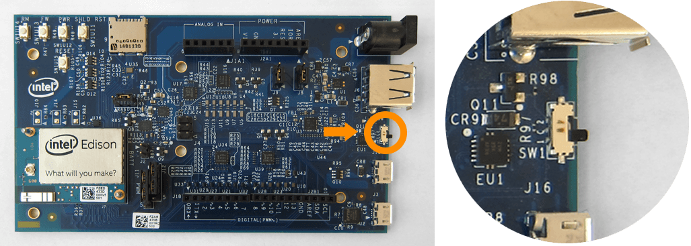

Device mode micro-USB cable
Use the top micro-USB port in USB device mode for:
- 5V power,
- programming the Intel® Edison using the Arduino IDE,
- programming the Intel® Edison using the Intel® XDK or Eclipse IDE included in the Intel® IoT Developer Kit via Ethernet over USB (not Wi-Fi), and
- writing to the onboard flash memory from your computer.

-
Find the microswitch in between the USB ports on the expansion board.
Switch the microswitch down towards the micro-USB ports, if it isn’t already.
 -
Plug a micro-USB cable into the top micro-USB connector on the expansion board.

-
Connect the other end of the USB cable into your computer.

-
A green LED should light up on the expansion board. Wait one minute for the Intel® Edison to finish booting up.

How do you know when the board is ready?
You will know that the Intel® Edison is fully initialized when your computer mounts a new drive (much like inserting a SD card into your computer).
The Intel® Edison needs approximately one minute to go through the entire Linux startup process. There is no onboard LED to indicate whether or not the Intel® Edison is fully initialized, however you can watch the full bootup sequence (whether for fun or for debugging purposes) if you are connected to the board via the bottom micro-USB cable. You will learn how to gain command line access to your Intel® Edison later in Shell Access.